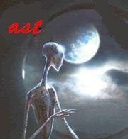

Forums galactiques > Taverne galactique : lieu de discussion informel > poésie
| jseb  30/01 ETU 21:20 | '''Superbement dramatique.''' |
Djil 30/01 ETU 21:22  | votre message me fait plaisir a un point tel que mes joues commencent a rougir... |
jseb31/01 ETU 02:47 | '''Les hommes attendaient patientaient, s'énervaient, alors que soudain, il y eut une voix belle et fière, qui appela une seule fois: "Venez mes frères! Elle est la qui arrive! Votre patience ne vous fut point inutile, Vous alliez l'oublier, alors qu'elle était la, juste à coté! Vite, vite! ne la faites pas attendre! Sinon elle finira comme vous: aigrie et impatiente Voyant cet homme, entendant cet ultimatum, Tous les commandants, du plus petit au moins grand, s'en allèrent voter, pour ne pas énerver, cette démocratie tant aimée. |
thorgal1231/01 ETU 21:25 | Partir, Pour oublier, Partir, Pour ce libérer Partir, Pour réaliser ses rêves, Partir, Pour s'envoler ver l'aventure, Partir, Et surtout ne pas regarder derrière sois, Pour ne rien regretter. |
wima31/01 ETU 21:30 | Très beau, cher Thorgal, très beau. |
Palpatou31/01 ETU 21:51 | Pour un âne enlevé, deux voleurs se battaient. L'un voulait le garder, l'autre le voulait le vendre. Tandis que coups de poing trottaient Et que nos champions songeaient à se defendre, Arrive un troisième larron Qui saisit Maître Aliboron. L'âne, c'est quelquefois une pauvre province. Les voleurs sont tel ou tel prince, Comme le transylvain, le turc et le hongrois ; Au lieu de deux, j'en ai rencontré trois. Il est assez de cette marchandisse. De nul d'eux n'est souvent la province conquise : Un quart voleur survient, qui les accordz net En se saisissant du baudet. De Jean de La Fontaine |
thorgal1231/01 ETU 21:51 | Tu crois Wima ? Moi je trouve que sa casse pas trois patte à un canard...... Mais j'avais rien d'autre à faire se soir............ |
Djil31/01 ETU 21:59 | parfois il est toujours bon de se remémorer ces grandes leçons meme si ils viennent d'un tout autre age n'oublions pas les vieux adages sagesse ancienne et rire farceur reviennent en moi avec bonheur mais laissons la place aux vrais poetes qui portent cesure, alexandrin en fete ces grands ecrivains aujourd'hui disparus Fontaine, Rabelais, et d'autre inconnus qui ont pourtant elevé l'art béni du verbe par des beaux mots, simples mais superbes |
Djil31/01 ETU 22:02 | peu importe la grandeur des phrases l'idée est tout ce qui compte petit a petit base après base la phrase prend vie, et monte et monte!!! ainsi thorgal soit en fier de cette idée que tu as crée car l'emotion qu'elle génere et digne de ta véritable identité |
Gabriel Fore 01/02 ETU 16:26 | Ô, toi, liberté ! Liberté de l'AST. Te souviens-tu de ton nom ? Te rappelle tu de ta fonction ? Ô, toi, liberté. Liberté, liberté. Reconnais-tu ton fiston Qui s'est perdue en prison ? Ô, toi, liberté Liberté de l'opprimé. Jamais, tes douces chansons A mes oreilles s'arreteront. |
vladok01/02 ETU 16:57 | Dommage, j'etais pret à mettre message remarquable à votre poeme, Gabriel Fore. J'en suis tout emu ! Snif ! |
CrimsonFury 4701/02 ETU 16:59 | C'était très drôle, Gabriel... |
Midas01/02 ETU 18:00 | Ô toi,je te fait cette hommage: Toi, notre source de vie. Toi, qui s'étent à l'infini. Toi qui brille dans la nuit. Toi , qui à vue pèrire nos amis et nos ennemis. Toi, qui fut crèer par Dieu, notre messie. Devant tous, ici et aujourd'hui, je te remerci, Origine, notre galaxie. |
Djil01/02 ETU 19:49 | ce poeme m'emeut d'autant plus que c'est moi qui ai baptisé la galaxie de ce nom... très beau poeme, vraiment... |
Midas01/02 ETU 21:00 | Merci Djil. J'esseyerais d'en faire d'autre. |
Midas02/02 ETU 17:44 | Bouge de ta retraite,ta conduite est trop parfaite. Relève ta geule,je suis là t'est pas seul. Tu bosse toute ta vie pour payer ta pierre tombale. Tu masque ton visage en regardant ton journal. Tu marche tel un robot dans les couloirs du métro. Les gens ne te touchent pas,il faut faire le premier pas. Tu voudrais dialoguer sans renvoyer la balle. Impossible d'avancer sans ton gilet par balles. Tu voudrait donner tes yeux à la justice. Impossible de violer cette femme plaine de vices. Antisocial tu est et antisocial tu restera, car ton destin c'est et ton destin sa restera. |
ERLORAK02/02 ETU 18:12 | Ce n'est plus de la poésie personelle, c'est une reprise de parole de chanson! |
CrimsonFury 4702/02 ETU 18:43 | Ca, une chanson? Le rap, de la musique? Houla... |
Midas02/02 ETU 18:55 | C'est une vieille chanson retransformer en poesie. |
Gabriel Fore02/02 ETU 20:45 | Les plongeurs. Oh ! Regardez donc le vide Qui sépare le néant de l'abyme Les émotions qu'il dilapide ! Quittez donc un peu vos cymes. "Oh oui, les idéaux qui manquent se ressemblent, Oh oui, les idéaux qui manquent tremblent ensemble De froid, de fiévre et de faim Et pourtant tout ce qu'ils demandent, c'est un peu de votre de pain." Je vois que vos regards enfiévré Se pose déjà la question de la vérité Qu'en est-il, qu'y fait-il ? Pour que ce gouffre soit si terrible ? "Oh oui, les idéaux qui manquent se ressemblent, Oh oui, les idéaux qui manquent tremblent ensemble De froid, de fiévre et de faim Et pourtant tout ce qu'ils demandent, c'est un peu de votre de pain." Dans l'ombre sans fond de ces mondes Vous y trouverez, sans fin, la ronde De tout ce qui a quitté l'univers Démocratie, paix, liberté de nos péres Vous y trouverez, si vous cherchez bien, Les idéaux qui manquent "Les idéaux qui manquent, oh oui, ils se ressemblent Les idéaux qui manquent, oh oui, ils tremblent ensemble De froid, de fiévre et de faim Et pourtant tout ce qu'ils demandent, c'est un peu de votre de pain." Il est bien trop sombre, Ce trou trop longtemps a l'ombre. Pourtant, parmis les hommes de ces terres Existent quelque personnalité, délétére ! Qui, eux aussi, existent dans l'ombre Brillant, aveuglant de leurs flammes l'obscurité Rayonnant, dans la folie, la paix : Tout ce qui fait de nous des bons. Vous y trouverez, si vous cherchez bien Les idéaux qui manquent Mais ne desesperez pas : sachez que dans la faille abominable Les plongeurs vous regarde avec la sagesse des fables. "Les idéaux qui manquent, oh oui, ils se ressemblent Les idéaux qui manquent, oh oui, ils tremblent ensemble Sauf quand les plongeurs en leurs seins Raménent pour l'univers quelques débris de demains." |
Forums galactiques > Taverne galactique : lieu de discussion informel > poésie